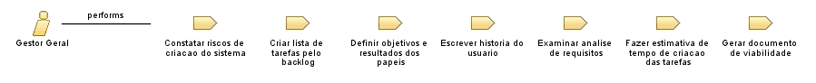

Role: Gestor Geral
Relationships

Primary Performs
Constatar riscos de criacao do sistema
Criar lista de tarefas pelo backlog
Definir objetivos e resultados dos papeis
Escrever historia do usuario
Examinar analise de requisitos
Fazer estimativa de tempo de criacao das tarefas
Gerar documento de viabilidade
Modifies
Backlog
Estoria do Usuario
Status do Projeto